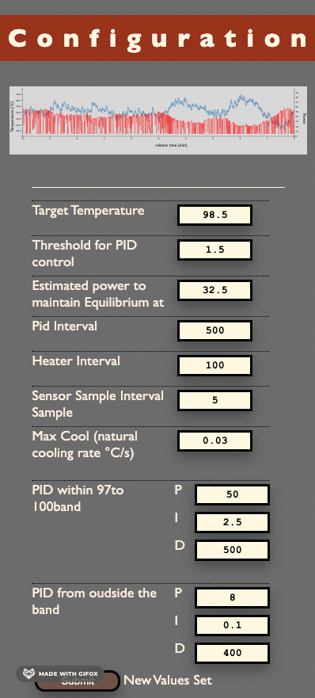
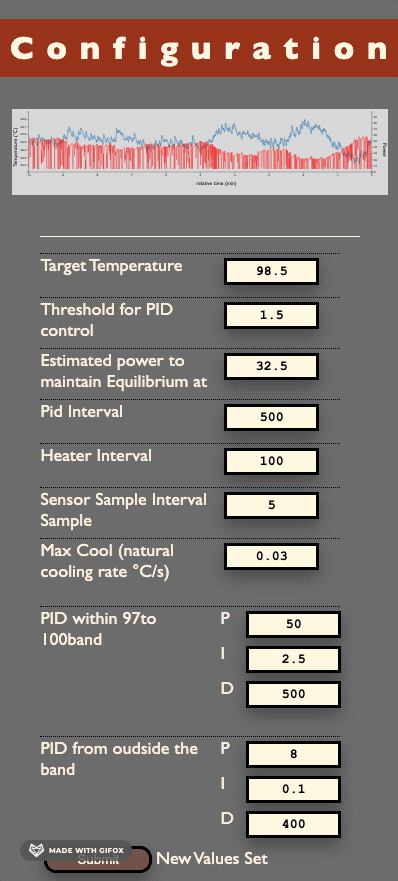

Overview
This project refactored from the original ESPressIoT project by Roman Schmit originally written for an ESP3866 board with a TSIC sensor.
This 'fork' ports that code to an ESP32 with a MAX31855 amplified K thermocouple. It has been refactored it to be more object oriented, and graphically more appealing, it for instance includes a GUI for parameter tuning.
More information about the bill of material and the development dependencies can be found in the projects README.
Interface
Homepage presents a simple temperature gauge, a power indicator, and the ability to turn the heater on or off. The configuration page contains all that is needed for setting the various parameters that control the temperature. It contains a graph that presents the last 10 minutes of data so you see what the impact is of your tuning. When the page is loaded it initiates its buffer with a few minutes of data from board. Setting the parameters us done using a username and password (currently a value set at compilation time).
Most of the interaction with the ESP32Machine is done via an restful API. All parameters can be set or read through it. In addition there is an MQTT interface that is used to publish the machines's current status.
Below are a few screenshoots to give you an idea.

 
